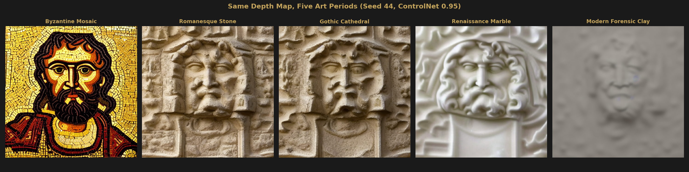
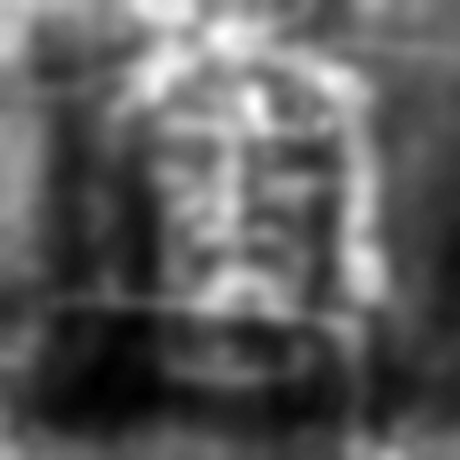
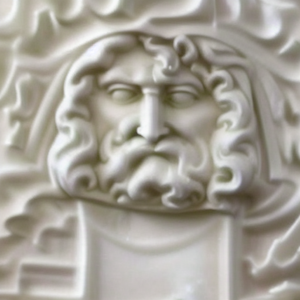
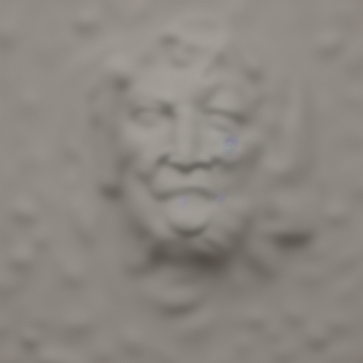

Methodology Demonstration
Art-Historical Comparison
The same depth map rendered across five art-historical traditions demonstrates that the geometry is constant — only the surface treatment changes.
The Experiment
A common criticism of AI-generated reconstructions is that the output reflects the model’s training bias rather than the input data. To address this, we held every variable constant except the text prompt:
- Same depth map: Enrie 150×150 depth, upscaled to 512×512 ControlNet conditioning
- Same seed: 44 (deterministic generation)
- Same ControlNet scale: 0.95 (strong depth constraint)
- Same inference steps: 30
- Different prompt only: five art-historical styles
Model: Stable Diffusion v1.5 with ControlNet depth (control_v11f1p_sd15_depth).
Comparison Grid

Individual Renders



What This Demonstrates
Across all five styles, the face geometry is identical: the same nose shape, brow ridge, eye socket depth, cheekbone placement, and chin contour. The ControlNet depth constraint at 0.95 means 95% of the output geometry comes from the depth map, with only 5% of variance from the style prompt.
The surface treatment changes dramatically — gold tesserae, rough limestone, polished marble, matte clay — but the underlying shape does not. This confirms that what the pipeline recovers is geometry, not a style-dependent hallucination.
Why This Matters
When you see the forensic clay reconstruction, you might wonder: did the AI just generate a generic face? The art-historical comparison shows that the answer is no — it generated this specific face five different ways. The geometry is locked by the depth map. The AI’s creative freedom is limited to surface texture and style, not structure.